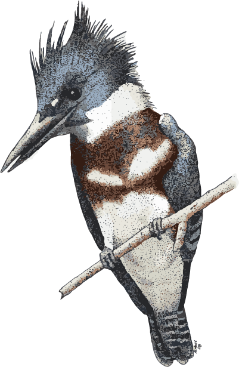

With its top-heavy physique, energetic flight, and piercing rattle, the Belted Kingfisher seems to have an air of self-importance as it patrols up and down rivers and shorelines. It nests in burrows along earthen banks and feeds almost entirely on aquatic prey, diving to catch fish and crayfish with its heavy, straight bill. These ragged-crested birds are a powdery blue-gray; males have one blue band across the white breast, while females have a blue and a chestnut band.
Belted Kingfishers live mostly on a diet of fish including sticklebacks, mummichogs, trout, and stonerollers. They also eat crayfish and may eat other crustaceans, mollusks, insects, amphibians, reptiles, young birds, small mammals, and even berries. A kingfisher looks for prey from a perch that overhangs water, such as a bare branch, telephone wire, or pier piling. When it spots a fish or crayfish near the surface, it takes flight, dives with closed eyes, and grabs the prey in its bill with a pincer motion. Returning with its prize, it pounds the prey against the perch before swallowing it head first. It may also hover above the water instead of searching from a perch. As nestlings, Belted Kingfishers digest the bones and scales they consume, but by the time they leave the nest they begin disgorging pellets of fish skeletons and invertebrate shel
Gray-cheeked Thrushes nest from easternmost Russia, across Alaska, and throughout northern Canada, mostly in habitats where the boreal forest (taiga) begins to give way to tundra. In Alaska and Russia, the subspecies aliciae has adapted to a great variety of shrubby and open wooded habitats, among them thickets of alder and willow along rivers and bogs, spruce forests near timberline, and in shrubbery in open woodlands, below cottonwoods, on hillsides, and on glacial moraines. Here, the species avoids areas with only low shrub cover (under 3 feet) but thrives in open coniferous forests with a well-developed shrub layer of dwarf birch, currant, rose, raspberry, blueberry, or similar understory plants. In Newfoundland and adjacent areas of northeastern Canada, the subspecies minimus is found in habitats associated with the southern boreal forest: mature spruce forests with heavy, tall shrub cover, coastal conifer thickets and conifer scrub, old-growth balsam fir forests, and clearcuts with regenerating balsam fir. Migrating Gray-cheeked Thrushes can turn up almost anywhere, but they select secluded areas with dense shrubs and ripe fruit when available. In South America, wintering birds occur in a great variety of woodlands, second growth, thickets, and plantations.
Belted Kingfishers excavate burrows in earthen banks, usually avoiding ones with vegetation (especially trees, whose roots get in the way of digging). They generally choose a bank near water, but may use a ditch, road cut, landfill, sand pit, or gravel pit far from water. A pair may select a nest site during courtship, usually high in the bank where floodwaters are unlikely to reach. The male probes the bank with his bill, flying back and forth to the female, who calls continuously from a nearby perch.
The male and the female take turns digging the burrow, with males spending about twice as much time digging as females. They usually take 3–7 days to finish it, but may sometimes take up to 3 weeks. The completed burrow extends 3–6 feet into the bank, sloping upward so that rainwater won’t collect inside, and ends in an unlined chamber 8–12 inches in diameter and 6–7 inches high. Throughout the breeding season a layer of undigested fish bones, fish scales, and arthropod exoskeletons may accumulate and provide some insulation.